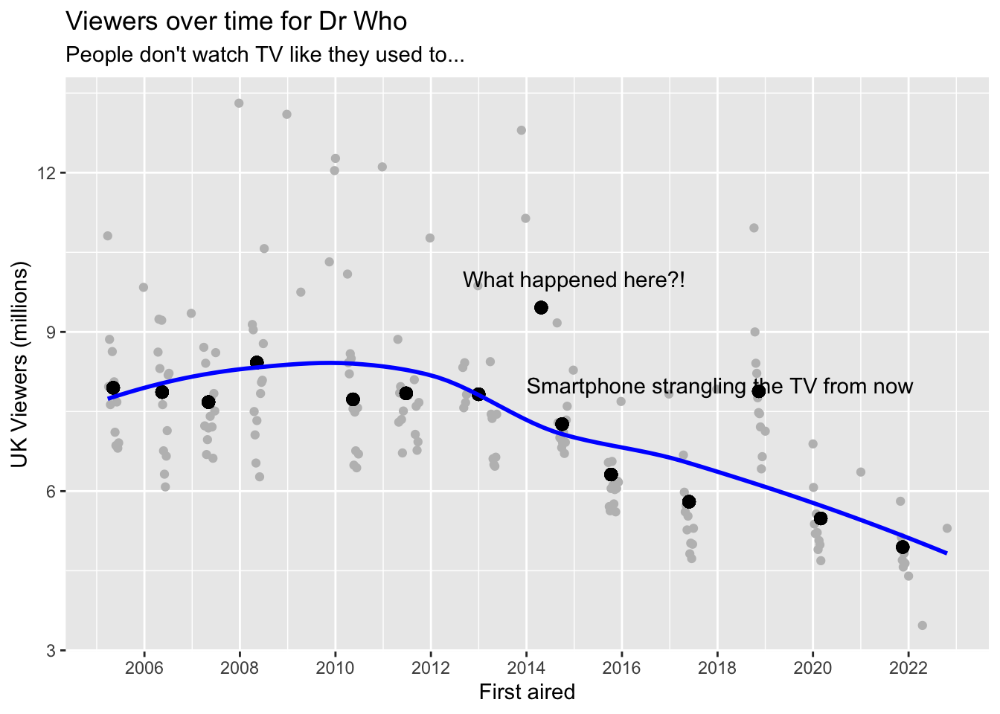

dta_eps_season <- dta_eps |>group_by(season_number) |>mutate(mean_viewers =mean(uk_viewers),mean_date =mean(first_aired) ) |>ungroup()dta_eps_season |>ggplot(aes(x = first_aired, y = uk_viewers)) +geom_point(colour ="grey") +geom_point(aes(x = mean_date, y = mean_viewers), size =2.5) +scale_x_date(breaks ="2 years", labels = \(x) format(x, "%Y")) +labs(x ="First aired",y ="UK Viewers (millions)",title ="Viewers over time for Dr Who",subtitle ="People don't watch TV like they used to..." ) +annotate("text", x = lubridate::make_date(2015), y =10, label ="What happened here?!") +annotate("text", x = lubridate::make_date(2014), y=8, label ="Smartphone strangling the TV from now", hjust =0) +stat_smooth(colour ="blue", se =FALSE)
`geom_smooth()` using method = 'loess' and formula = 'y ~ x'

Let’s now look at writers by season
dta_eps_wrt <- dta_eps |>left_join(dta_wrt, by ="story_number")
# A tibble: 40 × 2
writer n_written
<chr> <int>
1 Steven Moffat 45
2 Russell T Davies 31
3 Chris Chibnall 29
4 Mark Gatiss 9
5 Toby Whithouse 7
6 Gareth Roberts 5
7 Helen Raynor 4
8 Jamie Mathieson 4
9 Peter Harness 4
10 Matthew Graham 3
# ℹ 30 more rows
So Moffat wrote most episodes, then Davies, then Chibnall
And what about popularity by writer?
dta_eps_wrt |>group_by(writer) |>mutate(n_written =n() ) |>ungroup() |>filter(n_written >=5) |>ggplot(aes(x =fct_reorder(writer, rating), y= rating)) +geom_boxplot() +coord_flip() +labs(x ="Distribution of ratings",y ="Writer", title ="Rating distribution by writer",subtitle ="Writers who wrote at least five episodes" )